En accès libre
Découvrez Les Cours Sésame et SAJ
Un concours ne se prépare pas au hasard. Les concours que nous préparons, notre accompagnement de la présélection à l'oral, nos ouvrages et notre exigence de rigueur.
Réservées aux abonnés VIP
D'autres notions expliquées en une minute, à regarder dans l'espace VIP de l'espace abonnés.
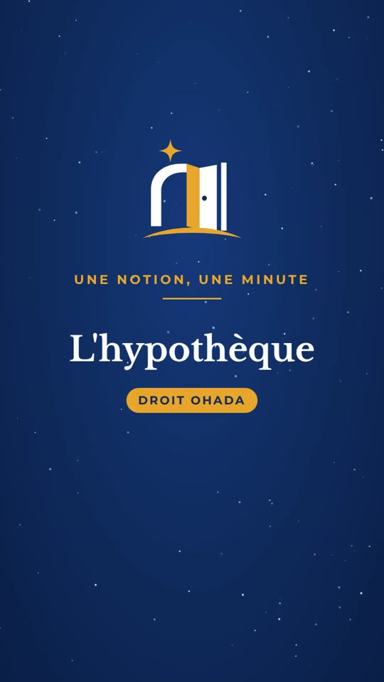
Réservée aux abonnés Une notion, une minuteL'hypothèqueL'article 190 de l'Acte uniforme OHADA portant organisation des sûretés : la constitution, les droits de préférence et de suite, un exemple et le piège de l'hypothèque non inscrite.S'abonner pour la regarder Réservée aux abonnés Une notion, une minuteLe contrôle de constitutionnalitéL'article 135 de la Constitution : la voie d'action, la voie d'exception, les effets des décisions, un exemple et le piège de la confusion des deux voies.S'abonner pour la regarder Réservée aux abonnés Une notion, une minuteL'établissement de la filiationLa loi de 2019 relative à la filiation : la présomption de paternité, le désaveu, la filiation hors mariage, un exemple et le piège de la reconnaissance par la mère.S'abonner pour la regarder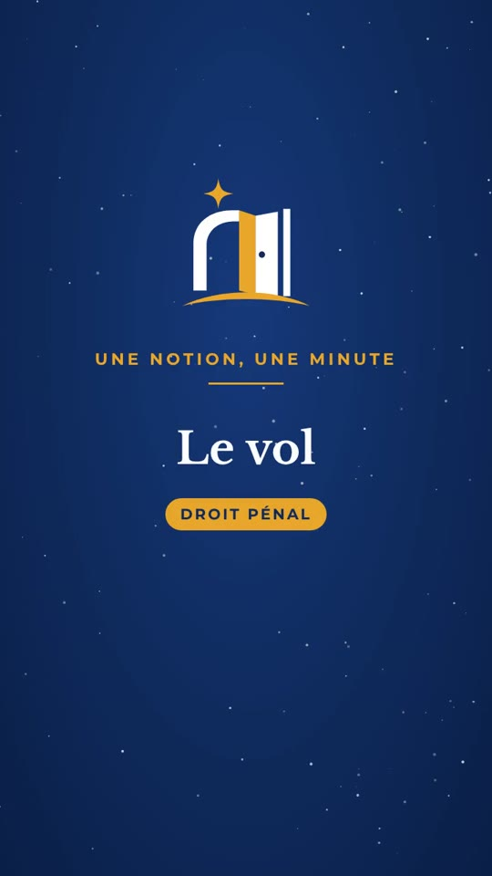
Réservée aux abonnés Une notion, une minuteLe volL'article 457 du Code pénal : les éléments, du vol simple au vol le plus grave, un exemple et le piège du délit malgré la peine.S'abonner pour la regarder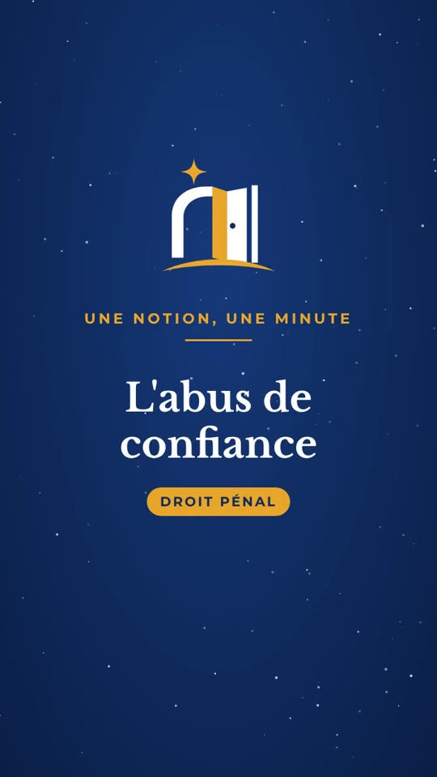
Réservée aux abonnés Une notion, une minuteL'abus de confianceL'article 467 du Code pénal : les éléments, la présomption de détournement, l'aggravation professionnelle, un exemple et le piège de la remise.S'abonner pour la regarder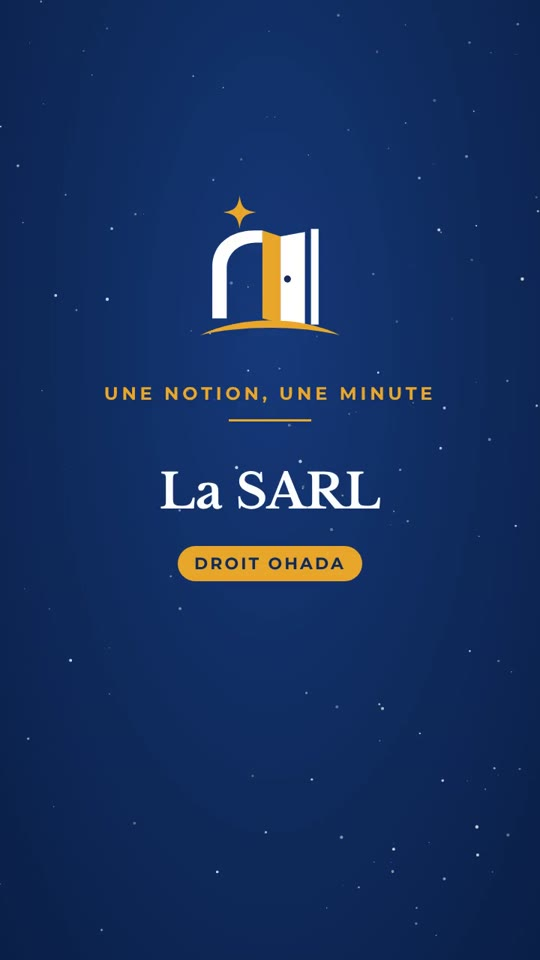
Réservée aux abonnés Une notion, une minuteLa SARLL'article 309 de l'Acte uniforme OHADA sur les sociétés commerciales : la constitution, la gérance, un exemple et le piège des limites statutaires.S'abonner pour la regarder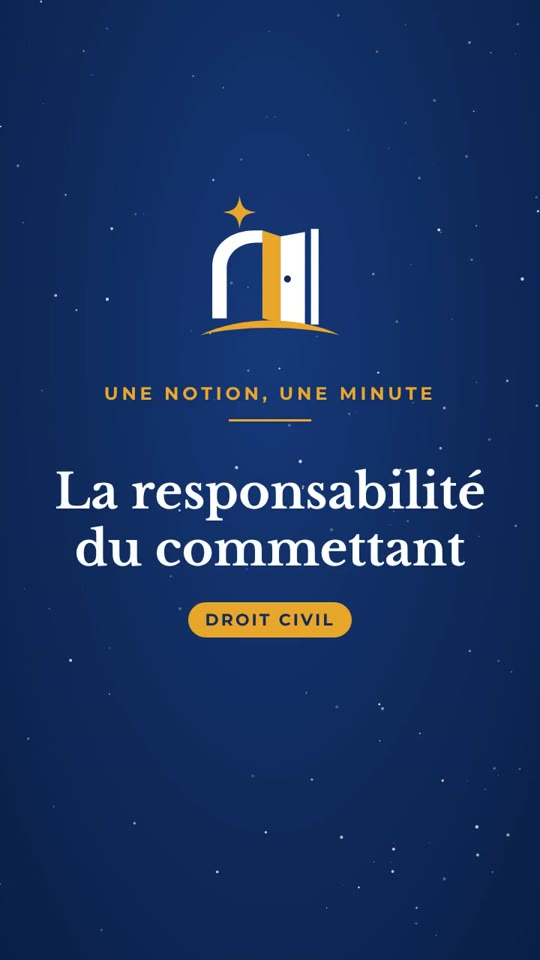
Réservée aux abonnés Une notion, une minuteLa responsabilité du commettantL'article 1384, alinéa 5, du Code civil : les conditions, le régime favorable à la victime, un exemple et le piège du lien de subordination.S'abonner pour la regarder Réservée aux abonnés Une notion, une minuteLes conditions du mariageLa loi de 2019 relative au mariage : l'âge, le consentement, les empêchements, les nullités, un exemple et le piège de l'accord des parents.S'abonner pour la regarder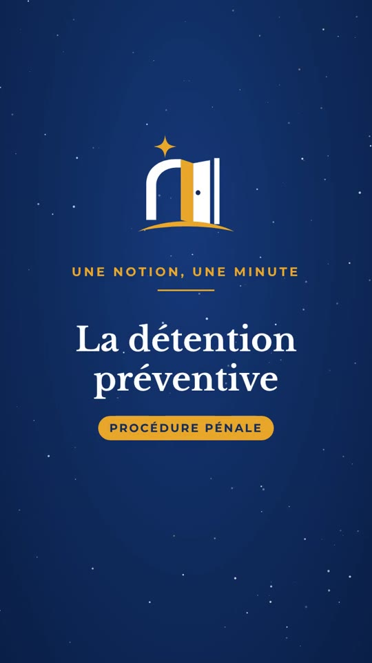
Réservée aux abonnés Une notion, une minuteLa détention préventiveLes articles 153 à 167 du Code de procédure pénale : les conditions, une durée limitée, un exemple et le piège de la motivation par la gravité des faits.S'abonner pour la regarder Réservée aux abonnés Une notion, une minuteL'escroquerieL'article 471 du Code pénal : les éléments, la sanction et la tentative, un exemple et le piège de l'abus de confiance.S'abonner pour la regarder Réservée aux abonnés Une notion, une minuteLe cautionnementL'Acte uniforme OHADA portant organisation des sûretés : la définition, la mention manuscrite, les effets, un exemple et le piège du cautionnement solidaire.S'abonner pour la regarder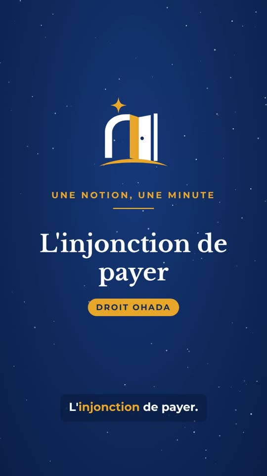
Réservée aux abonnés Une notion, une minuteL'injonction de payerL'Acte uniforme OHADA sur les procédures simplifiées de recouvrement : les conditions, la procédure, l'opposition dans les dix jours, un exemple et le piège de la charge de la preuve.S'abonner pour la regarder Réservée aux abonnés Une notion, une minuteLa police administrativeLa prévention des troubles à l'ordre public, police générale et polices spéciales, les limites contrôlées par le juge, un exemple et le piège de la police judiciaire.S'abonner pour la regarder Réservée aux abonnés Une notion, une minuteLe recours pour excès de pouvoirLa loi organique relative au Conseil d'État : l'objet du recours, le recours préalable et les délais de deux mois, les cas d'ouverture, un exemple et le piège du recours parallèle.S'abonner pour la regarder Réservée aux abonnés Une notion, une minuteLes trois principes du service publicContinuité, égalité, mutabilité : les lois de Rolland, leurs conséquences au regard de la Constitution, un exemple et le piège de l'uniformité.S'abonner pour la regarder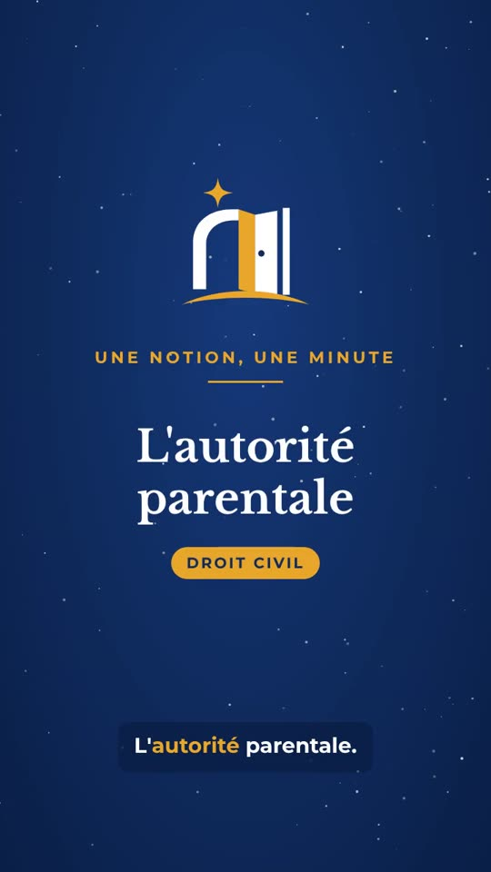
Réservée aux abonnés Une notion, une minuteL'autorité parentaleLa loi relative à la minorité : la définition de l'article 3, le contenu de l'autorité parentale, qui l'exerce selon la situation des parents, un exemple et le piège de la délégation.S'abonner pour la regarder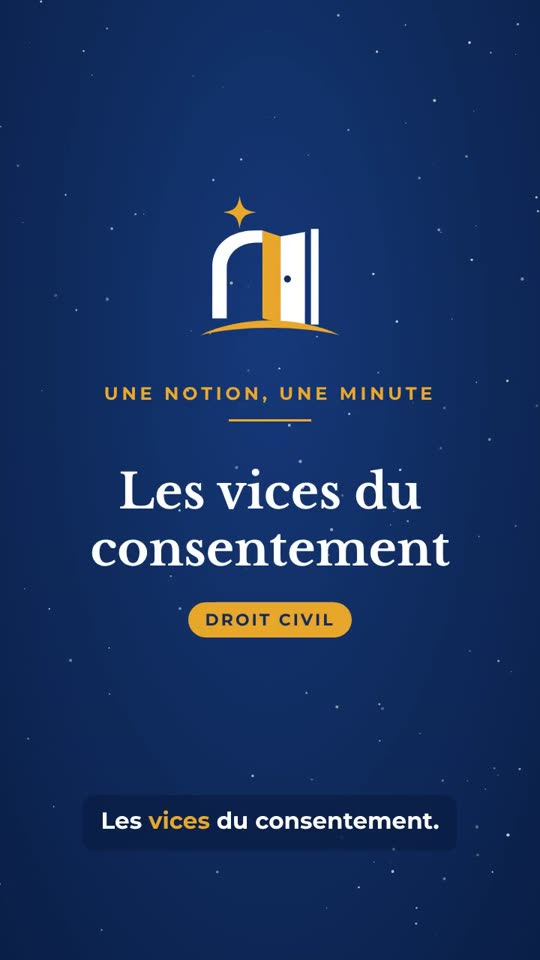
Réservée aux abonnés Une notion, une minuteLes vices du consentementLes articles 1109 à 1117 du Code civil : l'erreur, le dol et la violence, un exemple, la sanction et le piège de la crainte révérentielle.S'abonner pour la regarder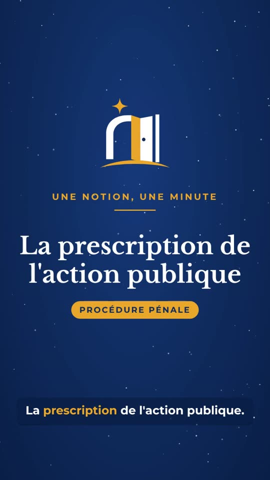
Réservée aux abonnés Une notion, une minuteLa prescription de l'action publiqueL'article 12 du Code de procédure pénale : les trois délais, l'effet des actes de poursuite, les crimes imprescriptibles, un exemple et le piège de la prescription de la peine.S'abonner pour la regarder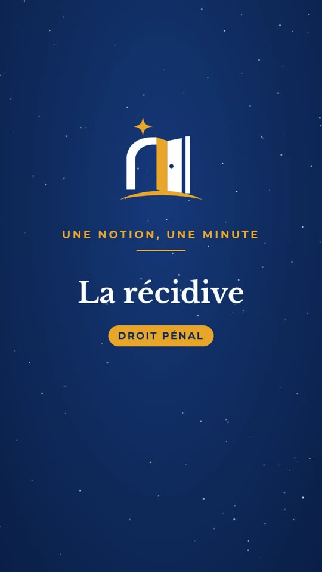
Réservée aux abonnés Une notion, une minuteLa récidiveL'article 12 du Code pénal, les effets sur la peine selon les articles 122 et 123, le délai de cinq ans, les délits assimilés, un exemple et le piège du concours d'infractions.S'abonner pour la regarder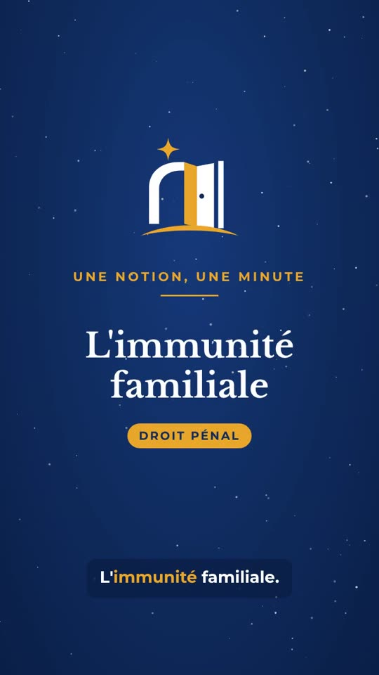
Réservée aux abonnés Une notion, une minuteL'immunité familialeL'article 103 du Code pénal : les trois cercles de proches, les limites de l'immunité, un exemple et le piège de la volonté de la victime.S'abonner pour la regarder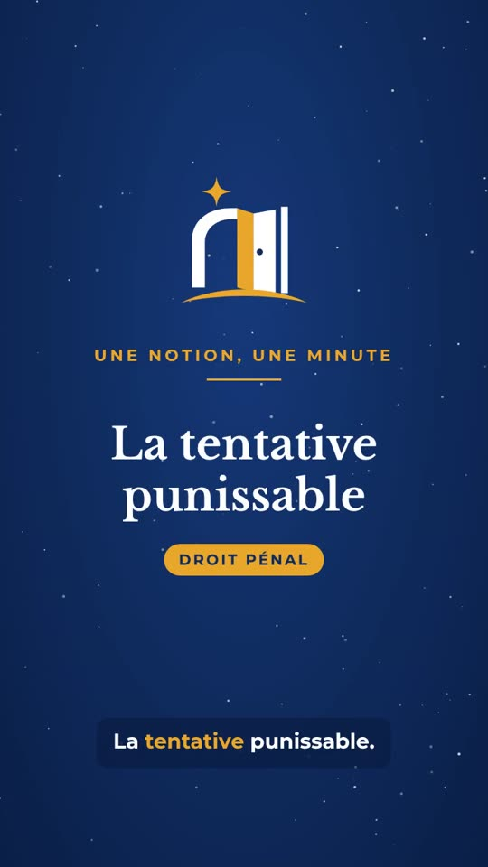
Réservée aux abonnés Une notion, une minuteLa tentative punissableL'article 28 du Code pénal : les deux conditions, un exemple, la tentative de crime et de délit, le but impossible et le piège des actes préparatoires.S'abonner pour la regarderLes vidéos du jour, dans l'espace abonnés
Chaque jour, une nouvelle vidéo : un QCM, un article, une fiche ou une notion expliqués. Elles se regardent dans l'espace abonnés, avec tout abonnement en cours.
Sujets corrigés, fiches de révision et QCM chronométrés, et dans l'espace VIP, nos ouvrages complets à lire en ligne. Créez votre compte en une minute, réglez votre formule, et votre accès s'ouvre.
Un conseil avant de commander ?
Dites-nous quel concours vous préparez et où vous en êtes : nous vous aidons à choisir les ouvrages adaptés, puis nous livrons partout en Côte d'Ivoire.
- WhatsApp et téléphone+225 01 60 86 05 37, +225 05 06 60 03 32
- LivraisonÀ Abidjan sous 24 à 48 heures, dans les autres villes sous 3 à 5 jours ouvrables.
- PaiementOrange Money, MTN MoMo, Wave et Moov Money, ou en espèces à la livraison à Abidjan.